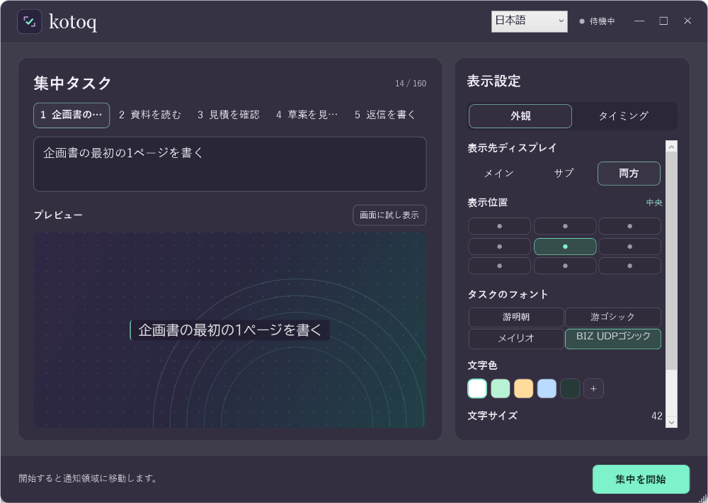

Windows · v1.4.0
kotoq
今やることを、
ひとこと画面に。
kotoq（コトク）は、画面を切り替えた瞬間に、書いておいた一行を表示します。作業の手を止めずに、次にやることを思い出せます。
kotoq.exe · .NET Framework 4.8

使い方
- 集中タスクを選ぶ
画面右上で言語（日本語・English・简体中文・한국어・Español）を切り替えられます。「集中タスク」の枠を選び、作業を160文字以内で入力します。5件まで登録でき、選んだ1件が表示されます。
- 見える場所を決める
「外観」で表示先をメイン・サブ・両方から選びます。9か所から表示位置を選び、「タスクのフォント」で表示言語に合う書体を選びます。候補は PC に入っている書体に応じて変わり、選択は言語ごとに保存されます。文字色やサイズ、不透明度も調整できます。「画面に試し表示」で確認できます。サブが未接続ならメインに、サブが複数あれば「サブ」でそのすべてに表示します。
- 集中を開始する
「タイミング」で、アプリ切り替え時・一定間隔・常時表示から選びます。「集中を開始」を押すと設定画面が閉じます。通知領域のアイコンから設定を開くと、集中中も登録済みのタスクに切り替えられます。
更新通知
kotoq は起動時と起動中の24時間ごとに公式サイトの公開版番号を確認します。新しい版があると設定画面に「ダウンロードページへ」が表示されます。通知領域で動作中は Windows 通知からも案内を開けます。
タスクと設定の保存
入力した内容と設定はこの PC の %LOCALAPPDATA%\kotodo\settings.xml に保存します。旧版の kotodo をお使いの方は、5件のタスク、選択中の枠、外観設定をそのまま使えます。初期版で登録した1件のタスクは1番の枠に引き継ぎます。
Quick start
Run kotoq.exe on Windows with .NET Framework 4.8. Use the top-right menu to select English, Japanese, Simplified Chinese, Korean, or Spanish. You can choose a task font for each language under Appearance. Save up to five tasks and select one. Choose the primary display, secondary displays, or both, then select “Start focus” to start. Your reminder appears over other apps and lets clicks pass through. Open kotoq from the system tray to change settings or end the session.
Free Windows download